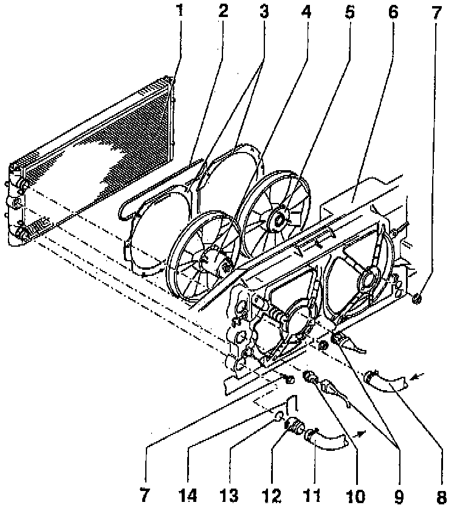

Radiator Cooling Fan Temperature Sensor / Switch: Service and Repair

LEGEND
1 Radiator
2 V-belt
3 Guide Ring
4 Coolant Fan
5 Auxiliary Fan
6 Lock Carrier
7 Bolt/Screw
8 Upper Coolant Hose
9 Connector
10 Coolant Fan Control (FC) Thermal Switch
11 Lower Coolant Hose
12 Connection
13 O-ring
14 Retaining Clip
NOTE: During removal and installation procedures, refer to the component location illustration above and component notes below.
COMPONENT NOTES
Radiator (1)
- After replacing, replace all engine coolant.
Guide Ring (3)
- Note installation position.
- Secured on lock carrier -6- with clips.
Bolt/Screw (7)
- Tighten to: 10 Nm (7 ft. lbs.).
Upper Coolant Hose (8)
- From Thermostat Housing.
Coolant (FC) Thermal Switch (10)
- Tighten to: 35 Nm (26 ft. lbs.).
- For Coolant Fan -4-.
- Switching temperatures:
Stage 1:
ON: 92-97°C (197-206°F).
OFF: 84-91°C (183-195°F).
Stage 2:
ON: 99-105°C (210-221°F).
OFF: 91-98°C (195-208°F).
Lower Coolant Hose (11)
- To Thermostat Housing.
O-ring (13)
- Always replace.
Retaining Clip (14)
- Check to make sure clip is seated securely.